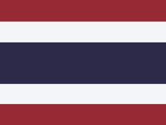

Thailand Visa Exemption Cut to 30 Days From 15 September 2026
Thailand has replaced its 60-day visa exemption with a 30-day stay for 60 countries and territories and a 15-day stay for two more, and has capped visa-exempt land entries at two a year. Here is how the new stay is counted, extended and enforced.
Last verified: September 2026
In short: since 15 September 2026, travelers from 60 countries and territories, including the US, the UK, Canada, Australia and every EU country, can stay in Thailand up to 30 days without a visa, for tourism only. One extension of up to 30 more days is possible at an immigration office (THB 1,900 as of September 2026). Visa-exempt entries over land borders are limited to two per calendar year. Overstaying costs THB 500 a day, up to THB 20,000, and more than 90 days brings a re-entry ban.
- Stay
- Up to 30 days per entry, tourism only
- Who
- 60 countries and territories; Seychelles and Mauritius get 15 days
- Extension
- Up to 30 more days, at the immigration officer's discretion; THB 1,900 fee
- Land entries
- At most two visa-exempt entries per calendar year (not for nationals of Malaysia, Brunei, Indonesia or Singapore)
- At entry
- Onward travel within 30 days, proof of accommodation, THB 20,000 in funds if asked, and a Thailand Digital Arrival Card
- Overstay
- THB 500 a day, capped at THB 20,000; re-entry bans from 90 days over
- Legal basis
- Ministry of Interior announcements, Royal Gazette, 31 August 2026; Ministry of Interior Order 1/2558 (overstay bans)
On this page
What changed on 15 September 2026
Thailand's Cabinet approved the revision on 19 May 2026. The Ministry of Interior announcements were published in the Royal Gazette on 31 August 2026 and took effect on 15 September 2026. They revoked the 60-day visa exemption that had covered 93 countries and territories, and gave each nationality one scheme instead:
- 30-day visa exemption for tourism, for 60 countries and territories.
- 15-day visa exemption for tourism, for Seychelles and Mauritius.
- Visa on arrival, for up to 15 days, for Azerbaijan, Belarus and Serbia.
- Bilateral agreements that give 90, 30 or 14 days continue to apply to the nationalities they cover.
The Royal Gazette lists these 60 for 30 days: Australia, Austria, Bahrain, Belgium, Bhutan, Brunei Darussalam, Bulgaria, Canada, Croatia, Cyprus, Czech Republic, Denmark, Estonia, Fiji, Finland, France, Georgia, Germany, Greece, Hungary, Iceland, India, Indonesia, Ireland, Israel, Italy, Japan, Jordan, Kuwait, Kyrgyzstan, Latvia, Liechtenstein, Lithuania, Luxembourg, Malaysia, Maldives, Malta, Netherlands, New Zealand, Norway, Oman, Philippines, Poland, Portugal, Qatar, Romania, Saudi Arabia, Singapore, Slovakia, Slovenia, South Africa, Spain, Sweden, Switzerland, Taiwan, Türkiye, Ukraine, United Arab Emirates, United Kingdom and United States.
Nationalities on none of these lists and without a bilateral agreement now need a visa before travel, applied for through the Thai e-Visa system.
How the 30 days are counted
The stay runs from the date of entry. The immigration stamp in your passport shows the last date you may stay, and that date is the one immigration enforces, so check it before you leave the counter. For planning, count the arrival day as day one, which is the cautious reading; the stamp settles it.
A 30-day entry. You arrive on 1 October 2026. Day one is 1 October, so day 30 is 30 October. An extension of up to 30 days moves the last day to 29 November at the latest.
Each entry starts a new count. The exemption is granted per entry, and the published rules set no rolling total across visits. Each land entry does use one of your two a year, and officers decide every admission.
Separate visits in one calendar year still add up for tax purposes, which is a different count (see below).
Extending a visa-exempt stay
You can ask for an extension of stay of up to 30 days at an immigration office in Thailand. The extension is at the officer's discretion, not automatic. The application fee for permission to extend a temporary stay is THB 1,900 as of September 2026. Visa-on-arrival holders cannot extend, except when illness prevents them from travelling.
Two land entries a year
Travelers using the 30-day or 15-day exemption may generally enter through land-border checkpoints no more than twice per calendar year. The limit does not apply to nationals of Malaysia, Brunei Darussalam, Indonesia and Singapore, and the Minister of Interior can designate other exempt nationalities.
The Gazette cap is about land crossings, but some Thai embassies state it more broadly. The Royal Thai Embassy in London tells travelers that the exemption can be used only twice within a calendar year and advises a visa for anyone visiting more often. As of September 2026 no official guidance says whether land entries made before 15 September 2026 count toward the 2026 limit.
Overstay fines and re-entry bans
An overstay is fined THB 500 per day, up to THB 20,000, paid before you leave. A one-week overstay costs 7 × 500 = THB 3,500. Longer overstays also lead to a ban on returning, counted from your departure date:
If you surrender at departure
- Up to 90 days
- Fine only
- More than 90 days
- 1-year ban
- More than 1 year
- 3-year ban
- More than 3 years
- 5-year ban
- More than 5 years
- 10-year ban
If you are arrested
- Up to 90 days
- 5-year ban
- More than 90 days
- 5-year ban
- More than 1 year
- 10-year ban
- More than 3 years
- 10-year ban
- More than 5 years
- 10-year ban
Repeated overstays, even short ones, can also get you marked in your passport as having violated Thai immigration law.
If you entered before 15 September 2026
The Ministry of Foreign Affairs says people already in Thailand under an earlier exemption may stay until their permitted period ends. After that, the new exemptions, a bilateral agreement or a visa apply. Someone who arrived on 1 September 2026 under the 60-day exemption can therefore stay until the date on their stamp, 30 October 2026. Their next entry falls under whichever scheme now covers their nationality. Whether a 60-day entry can still be extended by 30 days under the old practice has not been officially clarified.
Staying longer: tourist visa and DTV
Visa exemption
- Stay per entry
- 30 days
- Extension
- Up to 30 days
- Validity
- Per entry
Tourist visa (TR)
- Stay per entry
- 60 days from the date of entry
- Extension
- Up to 30 days, 90 days maximum
- Validity
- Enter within 3 months of issue; single entry
Destination Thailand Visa (DTV)
- Stay per entry
- 180 days
- Extension
- Once per entry, up to 180 days
- Validity
- 5 years, multiple entries
The DTV is for remote workers, freelancers and people doing Thai "soft power" activities such as Muay Thai, Thai cooking courses or medical treatment, and their spouses and children. It asks for bank statements showing at least THB 500,000, and the fee depends on the embassy (USD 400 in Washington, GBP 300 in London, as of September 2026). After 180 days plus an extension, a DTV holder has to leave and re-enter to start a new stay.
Beyond the day count
A visa-exempt entry is for tourism only. Time in Thailand also counts toward tax residence: reaching 180 days in a calendar year, across any number of visits, makes you a Thai tax resident, and residents are taxed on foreign income brought into Thailand. See Thailand's 180-day tax residency rule. For what an overstay does elsewhere, see overstaying a visa or stay limit.
AtlasDays counts your 30 Thai days from the day you land
Log your trips once. A Custom Visa or Entry Limit tracker set to Thailand with a 30-day per-entry limit counts each continuous stay from your arrival day, privately on your iPhone, and shows how many days you have left. If you get an extension, raise the limit to 60.
Get AtlasDaysFAQ
How long can I stay in Thailand without a visa?
Since 15 September 2026, up to 30 days per entry if your nationality is on the 30-day list, which includes the US, the UK, Canada, Australia and every EU country. Seychelles and Mauritius get 15 days. A 30-day stay can be extended once by up to 30 days at an immigration office.
Can I still get 60 days visa-free in Thailand?
No. The 60-day visa exemption ended on 15 September 2026. Anyone who entered under it before that date may stay until the date on their stamp. For a 60-day stay you now need a tourist visa, which can be extended to 90 days, unless a bilateral agreement covers your nationality.
How many times can I enter Thailand visa-free by land?
Twice per calendar year under the 30-day or 15-day exemption, unless you are a national of Malaysia, Brunei, Indonesia or Singapore. Some Thai embassies advise that the exemption should be used only twice a year in total and recommend a visa for more frequent visits.
About this article: AtlasDays provides general information, not legal, tax, or immigration advice. Rules change and outcomes depend on your circumstances, so never rely on it alone: check the linked official source or ask a qualified professional.